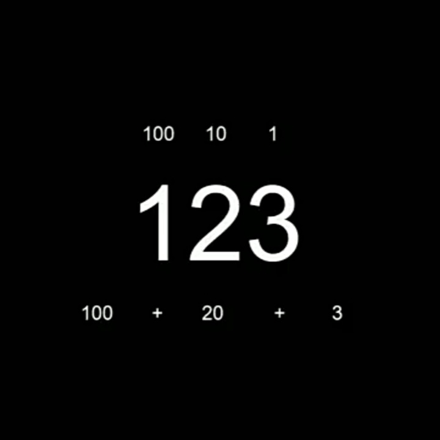
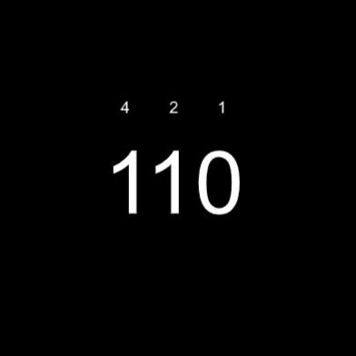
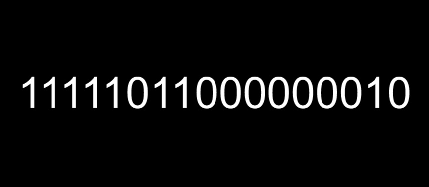

subyek:Computer Science
Materi:Bilangan Biner
Oleh:Fikri Mulyana Setiawan
"Bagaimana cara komputer bekerja?"
Salah satu komponen terpenting dari komputer adalah transistor. Secara sederhana,fungsi dari transistor adalah untuk membiarkan arus lewat pada suatu rangkaian dan mencegah arus melewati rangkaian.Artinya,kita hanya bisa menentukan apakah arus mengalir atau tidak pada suatu rangkaian. Nah, fungsi dari transistor inilah yang dimanfaatkan oleh para insinyur untuk membuat komputer.
Seperti yang sudah saya sebutkan sebelumnya,transistor hanya mampu menciptakan dua kondisi, yaitu arus mengalir atau arus tidak mengalir. Lalu bagaimana komputer bekerja hanya dengan 2 kondisi itu saja? caranya yaitu dengan menggunakan sistem bilangan biner yang diciptakan oleh Gottfried Wilhelm Leibniz. Sistem bilangan biner hanya punya 2 basis,yaitu 1 dan 0,berbeda dengan sistem bilangan yang biasa kita menggunakan yang memiliki basis 10(bilanhan desimal). Untuk memahami prinsip bilangan biner,kita harus mengerti nilai tempat suatu bilangan. Pada bilangan desimal, setiap tempat pada bilangan tersebut memiliki nilai kelipatan 10.misalnya bilangan 123.angka 1 pada bilangan 123 memiliki nilai tempat 100, angka 2 pada bilangan 123 memiliki nilai tempat 10 dan angka 3 pada bilangan 123 memiliki nilai 1.jadi, $123=1×100+2×10+3×1$ .
$=100+20+3$

Nah,bilangan biner juga seperti bilangan desimal,hanya saja,alih-alih menggunakan basis 10,bilangan biner menggunakan basis 2. Artinya nilai tempat pada bilangan biner merupakan kelipatan 2 (misalnya 2,4,8,16,32....). Contohnya bilangan 110 (ini tidak dibaca seratus sepuluh,tapi dibaca satu-satu-nol), angka 1 yang palipaling kiri pada bilangan tersebut memiliki nilai tempat 4,angka 1 yang ada di tengah memiliki nilai tempat 2,dam angka 0 paling kanan memiliki nilai tempat 1 .artinya,jika bilangan biner tersebut jika dikonversi ke bilangan desimal, maka hasilnya $=1×4+1×2+0×1=6$. jadi 110 pada bilangan biner =6 pada bilangan desimal.untuk lebih jelas,perhatikan gambar berikut:

Sekian untuk kali ini, untuk lebih lanjut akan dijelaskan pada part 2
untuk latihan,coba konversi bilangan biner di bawah ke bentuk bilangan desimal
referensi:
copyright © fikri mulyana setiawan